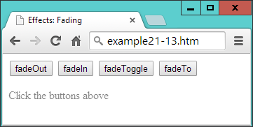
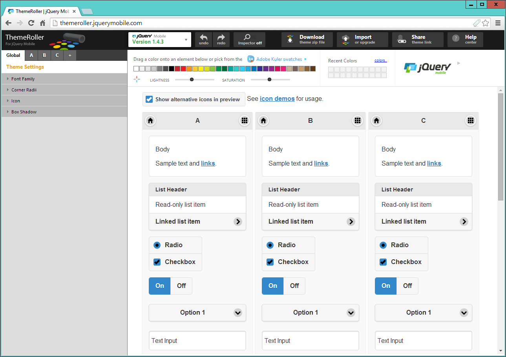

<script src='http://myserver.com/jquery-1.11.1.min.js'></script><script src='http://code.jquery.com/jquery-1.11.1.min.js'></script>
<script src='http://ajax.aspnetcdn.com/ajax/jQuery/jquery-1.11.1.min.js'></script>
<script src='http://ajax.googleapis.com/ajax/libs/jquery/1.11.1/jquery.min.js'>
</script>
In the case of the Microsoft CDN (aspnetcdn.com), you should begin the URL with
the base directory of
ajax.aspnetcdn.com/ajax/jQuery/
, and then follow that with the
filename you require.
<script src='http://code.jquery.com/jquery-latest.min.js'></script>
<script src='http://ajax.googleapis.com/ajax/libs/jquery/1/jquery.min.js'></script>
Be careful if you do this, though, because something on your web page could possibly
break with a future update, so be prepared to consider this possibility if any web
pages start to misbehave.
$('p').css('font-family', 'monospace')$('code').css('border', '1px solid #aaa')
<!DOCTYPE html>
<html>
<head>
<title>First jQuery Example</title>
<script src='jquery-1.11.1.min.js'></script>
</head>
<body>
The jQuery library uses either the <code>$()</code>
or <code>jQuery()</code> function names.
<script>
$('code').css('border', '1px solid #aaa')
</script>
</body>
</html>
When you load this example into a browser, the result will be similar to
Figure 21-1
.
Of course, this particular instruction simply replicates what you can do with normal
CSS, but the idea is to illustrate jQuery syntax, so I’m keeping things simple, for now.
jQuery('code').css('border', '1px solid #aaa')$.noConflict()jq = $.noConflict()css('font-family', 'Arial')$('p').css('text-align', 'justify')color = $('#elem').css('color')$('blockquote').css('background', 'lime')$('#advert').css('border', '3px dashed red')$('.new').css('text-decoration', 'underline')$('blockquote, #advert, .new').css('font-weight', 'bold')
<!DOCTYPE html>
<html>
<head>
<title>Second jQuery Example</title>
<script src='jquery-1.11.1.min.js'></script>
</head>
<body>
<blockquote>Powerful and flexible as JavaScript is, with a plethora of
built-in functions, it is still necessary to use additional code for
simple things that cannot be achieved natively or with CSS, such as
animations, event handling, and Ajax.</blockquote>
<div id='advert'>This is an ad</div>
<p>This is my <span class='new'>new</span> website</p>
<script>
$('blockquote').css('background', 'lime')
$('#advert').css('border', '3px dashed red')
$('.new').css('text-decoration', 'underline')
$('blockquote, #advert, .new').css('font-weight', 'bold')
</script>
</body>
</html>
Figure 21-2. Manipulating multiple elements
$('#clickme').click(function()
{
$('#result').html('You clicked the button!')
})
When the element with the ID of
clickme
is clicked, the
innerHTML
property of the
element with the ID of
result
is updated using the jQuery
html
function.
<!DOCTYPE html>
<html>
<head>
<title>jQuery Events</title>
<script src='jquery-1.11.1.min.js'></script>
</head>
<body>
<button id='clickme'>Click Me</button>
<p id='result'>I am a paragraph</p>
<script>
$('#clickme').click(function()
{
$('#result').html('You clicked the button!')
})
</script>
</body>
</html>
Figure 21-3. Processing a click event
$('document').ready(function()
{
// Your code goes here
})
Now the code will wait there until the document is ready, and only then will it be
called by the
ready
method. In fact, there’s a shorter version you can use that takes
even less typing, as shown in
Example 21-4
.
$(function()
{
// Your code goes here
})
If you get used to encapsulating your jQuery statements in one of these two struc‐
tures, you won’t encounter the types of errors that can be generated by trying to
access the DOM too soon.
<!DOCTYPE html>
<html>
<head>
<title>Events: blur</title>
<script src='jquery-1.11.1.min.js'></script>
</head>
<body>
<h2>Click in and out of these fields</h2>
<input id='first'> <input> <input> <input>
<script>
$('#first').focus()
$('input').focus(function() { $(this).css('background', '#ff0') } )
$('input') .blur(function() { $(this).css('background', '#aaa') } )
</script>
</body>
</html>
You are allowed to include whitespace characters between the clos‐
ing parenthesis of a method, and the period operator used to attach
another method to it (and even after the period too if you like), as
in the previous example where I have right-aligned the
focus
and
blur
event names under each other, to help the rest of the state‐
ments also line up in columns.
$(this).css('background', '#ff0')this.style.background = '#ff0'
$('.myclass') .click( function() { $(this).slideUp() })
$('.myclass').dblclick( function() { $(this).hide() })
Here I have opted to use in-line anonymous functions, but you can use named ones
instead if you like (but remember to supply only the name of the function without
parentheses, or it will be called at the wrong time). The
this
object will pass through
as expected and be made available to the named function, like this:
$('.myclass').click(doslide)
function doslide()
{
$(this).slideUp()
}
The
slideUp
and
hide
methods are detailed in the section,
“Special Effects” on page
521
. For now, though, just try running
Example 21-6
, and either click or double-click
the buttons to see how some disappear with an animation (using
slideUp
), and some
just vanish (using
hide
), as shown in
Figure 21-5
.
<!DOCTYPE html>
<html>
<head>
<title>Events: click & dblclick</title>
<script src='jquery-1.11.1.min.js'></script>
</head>
<body>
<h2>Click and double click the buttons</h2>
<button class='myclass'>Button 1</button>
<button class='myclass'>Button 2</button>
<button class='myclass'>Button 3</button>
<button class='myclass'>Button 4</button>
<button class='myclass'>Button 5</button>
<script>
$('.myclass').click( function() { $(this).slideUp() })
$('.myclass').dblclick( function() { $(this).hide() })
</script>
</body>
</html>
Figure 21-5. Button 3 has been clicked once and is sliding up
<!DOCTYPE html>
<html>
<head>
<title>Events: keypress</title>
<script src='jquery-1.11.1.min.js'></script>
</head>
<body>
<h2>Press some keys</h2>
<div id='result'></div>
<script>
$(document).keypress(function(event)
{
key = String.fromCharCode(event.which)
if (key >= 'a' && key <= 'z' ||
key >= 'A' && key <= 'Z' ||
key >= '0' && key <= '9')
{
$('#result').html('You pressed: ' + key)
event.preventDefault()
}
})
</script>
</body>
</html>
<!DOCTYPE html>
<html>
<head>
<title>Events: Mouse Handling</title>
<script src='jquery-1.11.1.min.js'></script>
<style>
#pad {
background:#def;
border :1px solid #aaa;
}
</style>
</head>
<body>
<canvas id='pad' width='480' height='320'></canvas>
<script>
canvas = $('#pad')[0]
context = canvas.getContext("2d")
pendown = false
$('#pad').mousemove(function(event)
{
var xpos = event.pageX - canvas.offsetLeft
var ypos = event.pageY - canvas.offsetTop
if (pendown) context.lineTo(xpos, ypos)
else context.moveTo(xpos, ypos)
context.stroke()
})
$('#pad').mousedown(function() { pendown = true } )
$('#pad') .mouseup(function() { pendown = false } )
</script>
</body>
</html>
In
Figure 21-7
, you can see how this very simple set of instructions can be used to
create line drawings (well, if you have artistic ability, that is :). Here’s how it works.
First, a
canvas
object is created by referencing the first (or zeroth) element of the
jQuery selector, like this:
canvas = $('#pad')[0]
Figure 21-7. Capturing mouse movement and mouse key events
This is one way you can quickly take a jQuery object and extract a standard JavaScript
element object. Another would be to use the
get
method, like this:
canvas = $('#pad').get(0)context = canvas.getContext("2d")pendown = false
$('#pad').mousemove(function(event)
{
...
})
First, the
xpos
and
ypos
local variables (local because of the
var
keywords) are
assigned values representing the position of the mouse within the canvas area.
var xpos = event.pageX - canvas.offsetLeft
var ypos = event.pageY - canvas.offsetTop
Now that we know where the mouse pointer is in relation to the canvas, the next pair
of lines test the value of
pendown
. If it is
true
, then the mouse button is being pressed,
and so a
lineTo
call is made to draw a line to the current location. Otherwise, the pen
is up, and so
moveTo
is called to simply update the current location:
if (pendown) context.lineTo(xpos, ypos)
else context.moveTo(xpos, ypos)
Then, the
stroke
method is called to apply whichever drawing command was just
made to the canvas. These five lines are all that is responsible for handling the draw‐
ing, but it’s still necessary to track the mouse button state, and so the final two lines of
code intercept the
mousedown
and
mouseup
events, setting
pendown
to
true
when the
mouse button is pressed, and
false
when it’s released:
$('#pad').mousedown(function() { pendown = true } )
$('#pad') .mouseup(function() { pendown = false } )
In this example, you see the combination of three different event handlers working
together to create a simple utility, using both local variables for internal expressions,
and global variables where an object or the state of something must be made available
across multiple functions.
<!DOCTYPE html>
<html>
<head>
<title>Events: Further Mouse Handling</title>
<script src='jquery-1.11.1.min.js'></script>
</head>
<body>
<h2 id='test'>Pass the mouse over me</h2>
<script>
$('#test').mouseenter(function() { $(this).html('Hey, stop tickling!') } )
$('#test').mouseleave(function() { $(this).html('Where did you go?') } )
</script>
</body>
</html>

$('#test').mouseover(function() { $(this).html('Cut it out!') } )
$('#test') .mouseout(function() { $(this).html('Try it this time...') } )
Or you could use the
hover
method to bind two handlers with a single function call,
like this:
$('#test').hover(function() { $(this).html('Cut it out!') },
function() { $(this).html('Try it this time...') } )
If you are planning on creating
mouseover
and
mouseout
combined effects, clearly the
hover
method is the logical function to choose, but there’s also another way you can
achieve the same result, which is chaining (explained later on in the section
“Method
chaining” on page 529
), using code like this:
$('#test').mouseover(function() { $(this).html('Cut it out!') } )
.mouseout(function() { $(this).html('Try it this time...') } )
Here the period operator at the start of the second statement attaches it to the first, so
that it creates a chain of methods.
<!DOCTYPE html>
<html>
<head>
<title>Events: submit</title>
<script src='jquery-1.11.1.min.js'></script>
</head>
<body>
<form id='form'>
First name: <input id='fname' type='text' name='fname'><br>
Last name: <input id='lname' type='text' name='lname'><br>
<input type='submit'>
</form>
<script>
$('#form').submit(function()
{
if ($('#fname').val() == '' ||
$('#lname').val() == '')
{
alert('Please enter both names')
return false
}
})
</script>
</body>
</html>
Figure 21-9. Checking user input upon submission
$('#form').submit(function()
if ($('#fname').val() == '' || $('#lname').val() == '')
Here the jQuery
val
method is used to retrieve the value in the
value
property of
each field. This is neater than using
$('#fname')[0]
(as in
Example 21-8
) to get
access to the DOM object, and then appending
value
to it to read the field’s value,
like this:
$('#fname')[0].value
.
$('#object').hide()
$('#object').hide(1000)
$('#object').hide('fast')
$('#object').hide('linear')
$('#object').hide('slow', 'linear')
$('#object').hide(myfunction)
$('#object').hide(333, myfunction)
$('#object').hide(200, 'linear', function() { alert('Finished!') } )
As you’ll see in the section
“Method chaining” on page 529
, you can attach function
calls (that supply arguments) to each other and they will then be animated in turn,
like the following, which will hide and then reveal an element:
$('#object').hide(1000).show(1000)
<!DOCTYPE html>
<html>
<head>
<title>Effects: hide & show</title>
<script src='jquery-1.11.1.min.js'></script>
</head>
<body>
<button id='hide'>Hide</button>
<button id='show'>Show</button>
<p id='text'>Click the Hide and Show buttons</p>
<script>
$('#hide').click(function() { $('#text').hide('slow', 'linear') })
$('#show').click(function() { $('#text').show('slow', 'linear') })
</script>
</body>
</html>

<!DOCTYPE html>
<html>
<head>
<title>Effects: toggle</title>
<script src='jquery-1.11.1.min.js'></script>
</head>
<body>
<button id='toggle'>Toggle</button>
<p id='text'>Click the Toggle button</p>
<script>
$('#toggle').click(function() { $('#text').toggle('slow', 'linear') })
</script>
</body>
</html>
The
toggle
method takes the same arguments as
hide
and
show
but keeps internal
track of the state of the element so that it knows whether to hide or show it.
<!DOCTYPE html>
<html>
<head>
<title>Effects: Fading</title>
<script src='jquery-1.11.1.min.js'></script>
</head>
<body>
<button id='fadeout'>fadeOut</button>
<button id='fadein'>fadeIn</button>
<button id='fadetoggle'>fadeToggle</button>
<button id='fadeto'>fadeTo</button>
<p id='text'>Click the buttons above</p>
<script>
$('#fadeout') .click(function() { $('#text').fadeOut( 'slow' ) })
$('#fadein') .click(function() { $('#text').fadeIn( 'slow' ) })
$('#fadetoggle').click(function() { $('#text').fadeToggle('slow' ) })
$('#fadeto') .click(function() { $('#text').fadeTo( 'slow', 0.5) })
</script>
</body>
</html>

Figure 21-11. The text has been faded to 50 percent opacity
<!DOCTYPE html>
<html>
<head>
<title>Effects: Sliding</title>
<script src='jquery-1.11.1.min.js'></script>
</head>
<body>
<button id='slideup'>slideUp</button>
<button id='slidedown'>slideDown</button>
<button id='slidetoggle'>slideToggle</button>
<div id='para' style='background:#def'>
<h2>From A Tale of Two Cities - By Charles Dickens</h2>
<p>It was the best of times, it was the worst of times, it was the age of
wisdom, it was the age of foolishness, it was the epoch of belief, it was
the epoch of incredulity, it was the season of Light, it was the season of
Darkness, it was the spring of hope, it was the winter of despair, we had
everything before us, we had nothing before us, we were all going direct to
Heaven, we were all going direct the other way - in short, the period was so
far like the present period, that some of its noisiest authorities insisted
on its being received, for good or for evil, in the superlative degree of
comparison only</p>
</div>
<script>
$('#slideup') .click(function() { $('#para').slideUp( 'slow') })
$('#slidedown') .click(function() { $('#para').slideDown( 'slow') })
$('#slidetoggle').click(function() { $('#para').slideToggle('slow') })
</script>
</body>
</html>

<!DOCTYPE html>
<html>
<head>
<title>Effects: Animation</title>
<script src='jquery-1.11.1.min.js'></script>
<style>
#ball {
position :relative;
}
#box {
width :640px;
height :480px;
background:green;
border :1px solid #444;
}
</style>
</head>
<body>
<div id='box'>
<img id='ball' src='ball.png'>
</div>
<script>
bounce()
function bounce()
{
$('#ball')
.animate( { left:'270px', top :'380px' }, 'slow', 'linear')
.animate( { left:'540px', top :'190px' }, 'slow', 'linear')
.animate( { left:'270px', top :'0px' }, 'slow', 'linear')
.animate( { left:'0px', top :'190px' }, 'slow', 'linear')
}
</script>
</body>
</html>
Figure 21-13. The ball is bouncing around in the browser
.animate( { left:'+=50px', top:'-=50px' }, 'slow', 'linear')
And you can even use the string values of
hide
,
show
, and
toggle
to update a prop‐
erty, like this:
.animate( { height:'hide', width:'toggle' }, 'slow', 'linear')
If you wish to modify any hyphenated CSS properties and they’re
not being passed within quotation marks (as with
height
and
width
in this example), you must convert their names to camelCase
first, by removing the hyphens and capitalizing the letter following.
For example, to animate the
left-margin
property of an element,
you would supply the name of
leftMargin
. However, when supply‐
ing a hyphenated property name within a string (for example:
css('font-weight', 'bold')
, you shouldn’t convert it to camel‐
Case.
.animate( { left:'0px', top :'190px' }, 'slow', 'linear', bounce)$('#ball').click(function() { $(this).finish() })
<!DOCTYPE html>
<html>
<head>
<title>The DOM: html & text</title>
<script src='jquery-1.11.1.min.js'></script>
</head>
<body>
<h2>Example Document</h2>
<p id='intro'>This is an example document</p>
<script>
alert(
$('#intro').html()
)
</script>
</body>
</html>

text = $('#intro').text()<a href='http://google.com'>Visit Google</a>$('#password').val('mypass123')
<!DOCTYPE html>
<html>
<head>
<title>The DOM: attr</title>
<script src='jquery-1.11.1.min.js'></script>
</head>
<body>
<h2>Example Document</h2>
<p><a id='link' href='http://google.com' title='Google'>Visit Google</a></p>
<script>
$('#link').text('Visit Yahoo!')
$('#link').attr( { href :'http://yahoo.com', title:'Yahoo!' } )
alert('The new HTML is:\n' + $('p').html())
</script>
</body>
</html>
The first jQuery statement uses the
text
method to change the text inside the
<a>
element, and the second one changes the
href
and
title
attribute values to match,
by supplying the data in the form of an associative array. The third statement displays
the changed element contents in an
alert
window, by first retrieving it with the
html
method, as shown in
Figure 21-15
.
Figure 21-15. The link has now been completely modified
url = $('#link').attr('href')
<!DOCTYPE html>
<html>
<head>
<title>Modifying The DOM</title>
<script src='jquery-1.11.1.min.js'></script>
</head>
<body>
<h2>Example Document</h2>
<a href='http://google.com' title='Google'>Visit Google</a>
<code>
This is a code section
</code>
<p>
<button id='a'>Remove the image</button>
<button id='b'>Empty the quote</button>
</p>
<img id='ball' src='ball.png'>
<blockquote id='quote' style='border:1px dotted #444; height:20px;'>
test
</blockquote>
<script>
$('a').prepend('Link: ')
$("[href^='http']").append(" <img src='link.png'>")
$('code').before('<hr>').after('<hr>')
$('#a').click(function() { $('#ball').remove() } )
$('#b').click(function() { $('#quote').empty() } )
</script>
</body>
</html>
In
Figure 21-16
, you can see the result of applying the
prepend
,
append
,
before
, and
after
methods to some elements.
Figure 21-16. A document with a variety of different elements
$('a').prepend('Link: ')$("[href^='http']").append(" <img src='link.png'>")$('code').before('<hr>').after('<hr>')$('#a').click(function() { $('#ball').remove() } )$('#b').click(function() { $('#quote').empty() } )$('#post23').addClass('read')$('#post23').addClass('read liked')$('#post23').removeClass('read')$('#post23').toggleClass('read')width = $('#elem').width()width = $('#elem').css('width')
width = $(window).width()
width = $(document).width()
When you pass the
window
or
document
objects to jQuery, you can‐
not fetch their width or height with the
css
method. Instead you
must use the
width
or
height
methods.
The value returned is independent of the
box-sizing
setting (see
Chapter 19
). If you
need to take
box-sizing
into account, use the
css
method with an argument of
width
instead, like this (but remember to remove the
px
that will be added after the
numeric part if you intend to work with the values returned):
width = $('#elem').css('width')$('.box').width(100).height(100)
<!DOCTYPE html>
<html>
<head>
<title>Dimensions</title>
<script src='jquery-1.11.1.min.js'></script>
</head>
<body>
<p>
<button id='getdoc'>Get document width</button>
<button id='getwin'>Get window width</button>
<button id='getdiv'>Get div width</button>
<button id='setdiv'>Set div width to 150 pixels</button>
</p>
<div id='result' style='width:300px; height:50px; background:#def;'></div>
<script>
$('#getdoc').click(function()
{
$('#result').html('Document width: ' + $(document).width())
})
$('#getwin').click(function()
{
$('#result').html('Window width: ' + $(window).width())
})
$('#getdiv').click(function()
{
$('#result').html('Div width: ' + $('#result').width())
})
$('#setdiv').click(function()
{
$('#result').width(150)
$('#result').html('Div width: ' + $('#result').width())
} )
</script>
</body>
</html>

iwidth = $('#elem').innerWidth()owidth = $('#elem').outerWidth()owidth = $('#elem').outerWidth(true)
<ul>
<li>Item 1</li>
<li>Item 2</li>
<li>Item 3</li>
</ul>
And, like families, there are multiple ways you can refer to HTML elements, such as
absolutely, starting at the window level and moving on down, also known as travers‐
ing the DOM. Or you can use the relationship between one element and another to
refer to elements. Really it’s a matter of what makes sense to your particular project.
my_parent = $('#elem').parent()my_parent = $('li').parent()alert($('li').parent().length)$('li').parent().css('font-weight', 'bold')
<!DOCTYPE html>
<html>
<head>
<title>DOM Traversal: Parent</title>
<script src='jquery-1.11.1.min.js'></script>
</head>
<body>
<ul>
<li>Item 1</li>
<li>Item 2</li>
<li>Item 3</li>
</ul>
<ul class='memo'>
<li>Item 1</li>
<li>Item 2</li>
<li>Item 3</li>
</ul>
<ul>
<li>Item 1</li>
<li>Item 2</li>
<li>Item 3</li>
</ul>
<script>
$('li').parent() .css('font-weight', 'bold')
$('li').parent('.memo').css('list-style-type', 'circle')
</script>
</body>
</html>
The three lists are all the same, except that the middle one’s
<ul>
element uses a class
of
memo
. In the script section, the first statement applies a value of
bold
to the
font-
weight
property of all parents of
<li>
elements. In this instance, it causes all the
<ul>
elements to display in bold.
$('#elem').parents('div').css('background', 'yellow')$('#elem').parentsUntil('div').css('background', 'yellow')
<!DOCTYPE html>
<html>
<head>
<title>DOM Traversal: Parents</title>
<script src='jquery-1.11.1.min.js'></script>
</head>
<body>
<div>
<div>
<section>
<blockquote>
<ul>
<li>Item 1</li>
<li id='elem'>Item 2</li>
<li>Item 3</li>
</ul>
</blockquote>
</section>
</div>
<div>
<section>
<blockquote>
<ul>
<li>Item 1</li>
<li>Item 2</li>
<li>Item 3</li>
</ul>
</blockquote>
</section>
</div>
</div>
<script>
$('#elem').parents('div') .css('background', 'yellow')
$('#elem').parentsUntil('div').css('text-decoration', 'underline')
</script>
</body>
</html>
If you take a look at
Figure 21-19
, you’ll see that the first jQuery statement has set the
background color of all the contents to yellow. This is because the ancestry tree has
been traversed all the way up to the
<html>
element using the
parents
method, and
both
<div>
elements encountered on the way up the tree have been selected (the one
containing the list with the
<li>
element—highlighted in bold—with the ID of
elem
,
and
its parent
<div>
, which contains both sets of nested elements).

li_children = $('#elem').children('li')li_descendants = $('#elem').find('li')all_descendants = $('#elem').find('*')
<ul>
<li>Item 1</li>
<li id='two'>Item 2</li>
<li>Item 3</li>
</ul>
Here is such a statement that will cause the sibling elements to be bold:
$('#two').siblings().css('font-weight', 'bold')$('#two').siblings('.new').css('font-weight', 'bold')
<!DOCTYPE html>
<html>
<head>
<title>DOM Traversal: Siblings</title>
<script src='jquery-1.11.1.min.js'></script>
</head>
<body>
<ul>
<li class='new'>Item 1</li>
<li id='two' class='new'>Item 2</li>
<li >Item 3</li>
<li class='new'>Item 4</li>
<li class='new'>Item 5</li>
<li >Item 6</li>
<li >Item 7</li>
</ul>
<script>
$('#two').siblings('.new').css('font-weight', 'bold')
</script>
</body>
</html>
When
loaded
into
a
browser,
the
result
of
issuing
the
jQuery
statement
is
Figure 21-20
, in which only Item 1, Item 4, and Item 5 have been bold, even though
Item 2 also uses the class
new
(because the method is called on that element, and so it
is excluded from the selection).

$('#two').parent().children('.new').css('font-weight', 'bold')$('#two').siblings('.new').andSelf().css('font-weight', 'bold')$('#new').next().css('font-weight', 'bold')
<ul>
<li >Item 1</li>
<li >Item 2</li>
<li id='new'>Item 3</li>
<li >Item 4</li>
<li >Item 5</li>
</ul>
So far, so simple. But what if you would like to reference
all
the siblings following a
particular element? Well, you can do that with
nextAll
method, like this (which in
the preceding snippet would style the last two items):
$('#new').nextAll().css('font-weight', 'bold')$('#new').nextAll('.info').css('font-weight', 'bold')
<ul>
<li >Item 1</li>
<li id='new'>Item 2</li>
<li >Item 3</li>
<li id='old'>Item 4</li>
<li >Item 5</li>
</ul>
Now it’s possible to select only those siblings following the one with the ID of
new
, up
to (but not including) the one with the ID of
old
, like this (in which just the third
item will be styled):
$('#new').nextUntil('#old').css('font-weight', 'bold')$('#new').nextUntil('#old', '.info').css('font-weight', 'bold')$('ul>li').first().css('text-decoration', 'underline')$('ul>li').last().css('font-style', 'italic')$('ul>li').eq(1).css('font-weight', 'bold')$('ul>li').filter(':even').css('background', 'cyan')$('ul>li').not('#new').css('color', 'blue')$('ul>li').has('ol').css('text-decoration', 'line-through')
<!DOCTYPE html>
<html>
<head>
<title>Selection Traversal</title>
<script src='jquery-1.11.1.min.js'></script>
</head>
<body>
<ul>
<li>Item 1</li>
<li>Item 2</li>
<li id='new'>Item 3</li>
<li>Item 4
<ol type='a'>
<li>Item 4a</li>
<li>Item 4b</li>
</ol></li>
<li>Item 5</li>
</ul>
<script>
$('ul>li').first() .css('text-decoration', 'underline')
$('ul>li').last() .css('font-style', 'italic')
$('ul>li').eq(1) .css('font-weight', 'bold')
$('ul>li').filter(':even').css('background', 'cyan')
$('ul>li').not('#new') .css('color', 'blue')
$('ul>li').has('ol') .css('text-decoration', 'line-through')
</script>
</body>
</html>
As you will see from studying
Figure 21-21
, every element in each list has been styled
by one or more of the jQuery statements.
Figure 21-21. Uniquely addressing elements in a jQuery selection
<!DOCTYPE html>
<html>
<head>
<title>Using is</title>
<script src='jquery-1.11.1.min.js'></script>
</head>
<body>
<div><button>Button in a div</button></div>
<div><button>Button in a div</button></div>
<span><button>Button in a span</button></span>
<div><button>Button in a div</button></div>
<span><button>Button in a span</button></span>
<p id='info'></p>
<script>
$('button').click(function()
{
var elem = ''
if ($(this).parent().is('div')) elem = 'div'
else elem = 'span'
$('#info').html('You clicked a ' + elem)
})
</script>
</body>
</html>

<!DOCTYPE html>
<html>
<head>
<title>Using each</title>
<script src='jquery-1.11.1.min.js'></script>
</head>
<body>
<div id='info'></div>
<script>
pets =
{
Scratchy : 'Guinea Pig',
Squeeky : 'Guinea Pig',
Fluffy : 'Rabbit',
Thumper : 'Rabbit',
Snoopy : 'Dog',
Tiddles : 'Cat'
}
guineapigs = []
$.each(pets, function(name, type){
if (type == 'Guinea Pig') guineapigs.push(name)
})
$('#info').html('The guinea pig names are: ' + guineapigs.join(' & '))
</script>
</body>
</html>
To do this, the
$.each
method is passed the array, along with an anonymous function
to process it. The function takes two arguments, the index into the array (called
name
), and the contents of each element (called
type
).
guineapigs = $.map(pets, function(type, name){
if (type == 'Guinea Pig') return name
})
Watch out when you change between using the
$.each
and
$.map
methods, because
$.each
passes arguments to the function in the
order
index
,
value
, but map uses the order
value
,
index
. This is why
the two arguments are swapped in the preceding
$.map
example.
<!DOCTYPE html>
<html> <!-- jqueryajaxpost.htm -->
<head>
<title>jQuery Ajax Post</title>
<script src='jquery-1.11.1.min.js'></script>
</head>
<body style='text-align:center'>
<h1>Loading a web page into a DIV</h1>
<div id='info'>This sentence will be replaced</div>
<script>
$.post('urlpost.php', { url : 'amazon.com/gp/aw' }, function(data){
$('#info').html(data)
} )
</script>
</body>
</html>
The
urlpost.php
program remains unchanged from
Example 17-3
, because this exam‐
ple and
Example 17-2
are interchangeable.
<!DOCTYPE html>
<html> <!-- jqueryajaxget.htm -->
<head>
<title>jQuery Ajax Get</title>
<script src='jquery-1.11.1.min.js'></script>
</head>
<body style='text-align:center'>
<h1>Loading a web page into a DIV</h1>
<div id='info'>This sentence will be replaced</div>
<script>
$.get('urlget.php?url=amazon.com/gp/aw', function(data){
$('#info').html(data)
} )
</script>
</body>
</html>
The
urlget.php
program remains unchanged from
Example 17-5
, because this exam‐
ple and
Example 17-4
are interchangeable.

Figure 21-23. Creating a mobile theme with the ThemeRoller app You’ll find jQuery mobile especially useful if you are writing web apps, and can find out more and download it from jquerymobile.com .